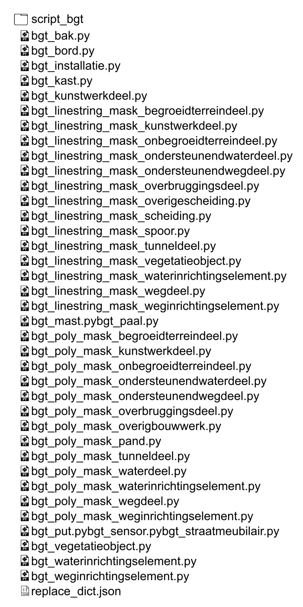

Python.
Zondag 15 oktober 2023.
Publieke Dienstverlening Op de Kaart - PDOK.
De Kadastrale Kaart - DKK.
Basiskaart Grootschalige Topografie - BGT.
Voor de gein en vooral om te leren, heb ik een python app ontwikkeld om in combinatie met AutoCAD een topografie-tekening te kunnen maken van data die tot ieders beschikking staat op websites van de PDOK. Ik beschrijf sumier hoe je een en ander tot een goed einde brengen kan. Mijn code buddy ChatGPT verdient in deze zeker een eervolle vermelding. Het is mijn eerste poging om in python iets te knutselen en ik ben al helemaal perplex dat er aan het einde iets uit komt rollen. Met QGIS had ik het niet bestaande probleem al opgelost, was benieuwd of dat met python ook tot de mogelijkheden behoorde. Nog even kijken hoe ik de bestanden kan aanbieden maar daar komen we wel uit. Niet schrikken het is een lang verhaal, maar als het staat heb je binnen vijf minuten een lap topografie (inclusief inrichtingselementen, perceelnummers en kadastergrenzen). Maak de oppervlakte van de gml-polygoon niet te groot, van een vierkante kilometer doetie al hikken. Mijn code buddy ChatGPT verdient in deze zeker een eervolle vermelding. Ik gebruik veel te veel script bestanden. Kan nu al zien dat ik sommige dingen niet "pythonic" heb benaderd. Schiet me.
Vanuit Google Earth doe je een KML polygoon opslaan als "mask.kml" in een folder "C:/PietPad/kml_input". Zorg er voor dat je het bestandje als "kml" opslaat, dus niet als "kmz" want dan werkt het niet ben ik bang. En een linestring werkt ook niet kom ik net achter.. Het pad is in zoverre niet belangrijk dat je het altijd aanpassen kan. Het is vervolgens wel zaak om de bijgeleverde lisp-routines, op juist dat adres de data in de vorm van csv-bestanden te laten bevragen.Een overzicht van de projectmap.
"./convert_mask_kml_geojson.py" om de "C:/PietPad/kml_input/mask.kml" hetzelfde CRS (Coordinate Reference System) te geven als de "wkt" die we nodig hebben in het geofilter van de te downloaden bestanden. "./convert_mask_geojson_wkt.py" om een "wkt" formattering te bereiken (GDAL heeft geen driver om "kml" direct om te zetten naar "wkt" in de vorm van "./data_bgt/mask.csv", vandaar die tussenstap met "./data_bgt/mask.geojson". Om de scripts te laten werken had ik een nep pythonwheel gedownload en geïnstalleerd, dat daar speciaal voor wordt gemaakt ("Windows Binary"). Anders valt "gdal" in mijn geval helemaal niet te gebruiken omdat de "gdal" die ik voor mijn QGIS installatie nodig heb voor moeilijkheden zorgt (die heb ik ooit wat onhandig geïnstalleerd). Deze werk-omheen wordt algemeen gebruikt door gis gebruikers. "./dkk_request.py" om data te downloaden van PDOK DKK naar de folder "./data_dkk". "./dkk_zipunpack.py" om de data uit te pakken in dezelfde folder "./data_dkk". "./bgt_request.py" om data te downloaden van PDOK BGT naar de folder "./data_bgt". "./bgt_zipunpack.py" om de data uit te pakken in dezelfde folder "./data_bgt". "./convert_all_bgt_gml_geojson.py" om alle uitgepakte gml-bestanden in de folder "./data_bgt"om te zetten naar geojson-bestanden binnen dezelfde folder "./data_bgt ". Doe ik voornamelijk om wat foutmeldingen te voorkomen. De gml-bestanden bevatten rare geometrieën zoals "MultiSurface" of "CurvePolygon". Die worden niet ondersteund door geopandas. Dan worden er lijnen niet getrokken of overgeslagen (tenminste dat is mijn indruk). "./dkk_all.py" zet drie pythonscripts aan het werk, die spugen drie csv-bestanden uit voorverdere verwerking , zij creëren "./data_dkk/dkk_openbareruimtelabel.csv", "./data_dkk/dkk_pandcsv" en "./data_dkk/perceel.csv". Alle drie de bestanden bevatten data voor punten. Een volgnummer, een x, een y, een draaihoek en een inhoud. "./dkk_mask_all.py" zet vier pythonscripts aan het werk, die spugen vier csv-bestanden uit. Zeschrijven "C:/PietPad/csv_output/dkk_openbareruimtelabel_mask.csv" en "C:/PietPad/csv_outputdkk_pand_mask.csv" naar buiten voor rechtstreeks gebruik in AutoCAD middels een lisp. Tevens"./data_dkk /dkk_perceel_mask.csv" en "./data_dkk/dkk_ kadastralegrens_mask.csv" dat zijnprobleemgevallen voor mij. Het bestand "./data_dkk/dkk_kadastralegrens_mask.csv" is voor de AutoCAD commandprompt. Maar de data staat nog tussen dubbele aanhalingstekens, omdat het datatype tekst is (en omdat ik niet weet of dat mogelijk direct is op te lossen). Het bestand "./data_dkk/dkk_perceel_mask.csv" zal gebruikt worden door een lisp-routine inAutoCAD. Ben niet tevreden over de formattering, in de naam zit een dubbele spatie tussen "sectie" (een letter) en het "perceelnummer" (een integer), maar bezit te weinig kennis om het logischer op te lossen.
Overzicht van de map "./script_dkk"
Deze bestanden zijn het gevolg van wat in python een "sjoin" genoemd wordt. Alle geometrie die binnen de "./data_bgt/mask.geojson" valt wordt weggeschreven, de rest valt af. Zowel PDOK-bgt als PDOK-dkk begrenzen hun datasets in vierkanten van 2 bij 2 km. Je kan je voorstellen dat het leeuwendeel van de data die we gedownload hebben genegeerd wordt. "./bgt_punten_all.py" zet dertien pythonscripts aan het werk, die alle punten uit de gml-bestanden uit de downloads verwerken naar "./data_bgt/bgt_punten.csv". "./bgt_punten_mask_all.py" verwerkt "./data_bgt/bgt_punten.csv", alle punten die binnen de ".data_bgt/mask.geojson" vallen, worden naar buiten geschreven "C:/PietPad/csv_output/bgt_punten_mask.csv" voor rechtstreeks gebruik in AutoCAD middels een lisp. "./bgt_linestrings_mask_all.py" zet dertien pythonscripts aan het werk, die alle lijnen uit degeojson-bestanden uit de map "./data_bgt" verwerken. Gelijk sjoin met het "./data_bgt/maskgeojson" alles weggeschreven naar "./data_bgt/bgt_poly_mask.csv". "./bgt_poly_mask_all.py" zet elf pythonscripts aan het werk, die alle polygonen omzetten naar lijnen uit de geojson-bestanden uit de map "./data_bgt". Gelijk sjoin met het "./data_bgt/maskgeojson" alles weggeschreven naar "./data_bgt/bgt_poly_mask.csv". Het bestand "./data_bgt/bgt_poly_mask.csv" is voor de AutoCAD commandprompt. Maar de data staat nog tussen dubbele aanhalingstekens, omdat het datatype tekst is (en omdat ik niet weet of dat mogelijk direct is op te lossen). Verder in de projectmap bevind zich een folder "./myenv" dat is de virtuele omgevingsmap, en een tekstbestand "./requirements.txt" waar alle packages in een lijst zijn geschreven. Die packages zitten in de map "./myenv/Lib/site-packages".
Overzicht van de map "./script_bgt".
Blijf nog tobben met drie problemen, daartoe heb ik alweer eens een script "./replace_all_DB" gemaakt dat drie pythonscripts aan het werk zet. Die mangelen "./data_bgt/bgt_poly_mask.csv" naar buiten toe tot "C:/PietPad/csv_output/commandprompt_acad/bgt_lijnen.csv". En "./data_dkk/dkk_kadastralegrens_mask.csv" naar buiten toe tot "C:/PietPad/csv_output/commandprompt_acad/dkk_kadastralegrens.csv". En "./data_dkk/dkk_perceel_mask.csv" naar buiten toe tot "C:/PietPad/csv_output/ dkk_perceel.csv".
Overzicht van de map "./replace_dkk".
Eindelijk heb ik een volle folder "C:/PietPad". Het script main.py heeft als laatste arbeidsgang: de twee folders "./data_bgt" en "./data_dkk" leegjanken in de pedaalprully. Je kan dus altijd even terugkijken op dat adres. Dat zijn in totaal 104 bestanden.
Overzicht van de map "C:/PietPad".
De focus van de data oogst kan dus steeds verplaatst worden door het "C:/PietPad/kml_input/mask.kml" teoverschrijven. Als het programma gereed is heb ik in de map "C:/PietPad/csv_output" vier bestanden die rechtstreeks naar mijn lisp-routines in de template AutoCAD tekening gelinkt zijn. De bestanden in de map "C:/PietPad/csv_output/commandprompt_acad" moet ik even in een teksteditor openen, alles selecteren en in de commandprompt van AutoCAD plakken. Het programma kan ik in de windows commandprompt aanroepen door in de map van het project te gaan staan, en in de bovenbalk "cmd" te typen. In de windows commandline moet ik dan via "D:\26.Pyton\Project\myenv\Script\activate" de shell van het virtual environment aanroepen. Als je daar aangekomen bent kan je de hele gang van zaken in beweging zetten door het script "main.py" uit te voeren. Bij de start opent zich een terminal. In de scripts heb ik na uitvoering steeds iets laten printen, zodat je het hele proces een beetje volgen kan.
Dan run ik mijn script en alles loopt door tot het eind als het goed is. Steeds dezelfde namen op hetzelfde adres, vooral voor de lisp-routines en steeds andere data omdat je de kml overschrijft. Op de eerste afbeelding zie je hoe ik het project ingedeeld heb. Aparte mappen voor de scripts in de dkk- en de bgt-afdeling, en de hoofdscripts om alle zaken bij elkaar te houden in de root. Vaak zijn de scripts in de aparte folders de subprocessen in de hoofdscripts. Voor de rest heb ik geen idee of ik het op de juiste manier doe of heb ingedeeld. Weet alleen dat het op deze manier redelijk snel werkt, als je niet hele grote oppervlakten in die "C:/PietPad/kml_inputmask.kml" opslaat. Nadat ik de laatste arbeidsgang dat "./replace_all_DB" heb toegevoegd, loopt de aorta nooit meer vast. Ik bedoel de cursor jankt door alle regels heen in AutoCAD tot er niks meer over is. Eerst stopte de cursor nogal eens, nu dus nooit meer. DB, kort voor 'dubbele' die mij frustreren, aanhalingstekens en spaties in de csv-bestanden. Het bestand "./script_bgt/replace_dict.json" is een python dictionary in json format met alle steekwoorden die worden gebezigd in de bgt-bestanden ('plus-types'). De tuples drijven de keuze van de blokken voor de inrichtingselementen in de lisp-routines aan. Beetje verwarrend maar heeft niets met dat nog eens formatteren van de probleemgevallen te maken.
Het is dus niet zozeer een app geworden. Vooral door de problemen met "GDAL" (Geospatial Data Abstraction Library). Heb geprobeerd om met "cx-Freeze", "pyinstaller" en "auto-py-to-exe" alle scripts om te werken naar een standalone app, maar ik weet niet hoe ik dat oplossen kan. Heb met succes de hele zaak overgeplant naar een laptop, en die begon zonder problemen de scripts af te raffelen. Het virtuele environment op de laptop leek wel wat op degene die ik op mijn PC had staan. Maar die dingen kan je altijd even maken en inrichten naar je zin. Je kan een lijst ophoesten met alle site-packages die in het virtuele environment gedownload zijn. Maar met een paar packages als pandas, geopandas, json, pywin32 en nog wat zo ellende kom je een heel eind.
Een voorbeeld: Een nieuwe aansluiting op een glasvezelnetwerk. De rode lijn is de polygoon "C:/PietPad/kml_input/mask.kml". Als die is opgeslagen kan de app worden gestart.
De verschillende lisp-routines en lijnen zijn binnen AutoCAD geplakt en geknipt. Alles binnen vier minuten (ik heb wel een dikke PC, maar die is toch ook alweer 6 jaar oud).
Zo ziet de tekening in paperspace eruit, schaal 1 : 500. Dit is een A1. Let vooral even op de inrichtingselementen!